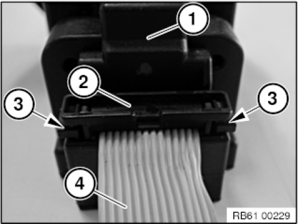
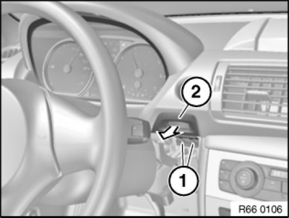

Keyless Start Antenna: Service and Repair
66 12 100 Removing And Installing/Replacing Slide-in Unit For Radio-operated Key

IMPORTANT:
In the event of complaint "slide-in unit for radio-operated key jams or can not be retained", carry out following checks before replacement:
1. Check both sides of plug connection of ribbon cable (2) to slide-in unit for radio-operated key (1) for correct locking (3).
2. Check ribbon cable (4) for damage.
If required, lock plug connection of ribbon cable (2) correctly and carry out function check.
If this rectifies fault pattern, do not replace slide-in unit for radio-operated key.

Necessary preliminary tasks:
- Remove lower left trim from instrument panel

Release screws (1).
Pull back slide-in unit for radio-operated key (2) with corresponding ribbon cable.
IMPORTANT:
Carefully unlock and disconnect associated plug connection for ribbon cable.
Replace the ribbon cable if damaged.
The ribbon cable leads to:
- Control unit for Car Access System
- Start/Stop switch
Remove slide-in unit for radio-operated key (2).